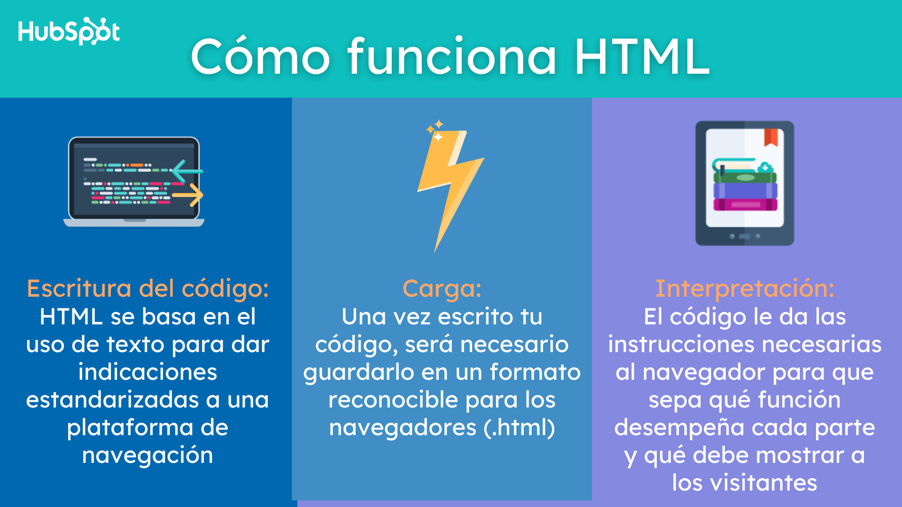

1. HTML
El Lenguaje de Marcado de Hipertexto (HTML) es el código que se utiliza para estructurar y desplegar una página web y sus contenidos. Por ejemplo, sus contenidos podrían ser párrafos, una lista con viñetas, o imágenes y tablas de datos.
Python
Python se utiliza en una amplia variedad de aplicaciones, incluyendo desarrollo web, ciencia de datos, aprendizaje automático, automatización, y más.